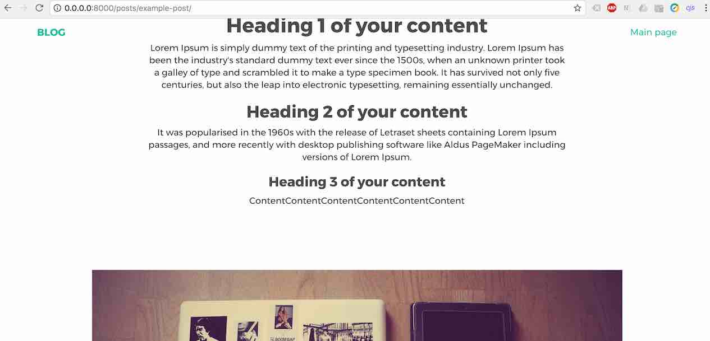
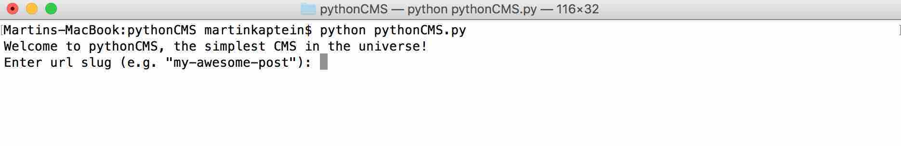

May 18, 2017
By Martin Kaptein
PythonCMS - Static Blog Generator
Introduction
PythonCMS is a static blog and site generator, written in Python 3, which is fully portable and very easy to use.
My idea is to create something that is refreshingly easy and simple to use, requiring only basic knowledge of HTML, yet being very flexible.

An example post using PythonCMS
Advantages of PythonCMS
- No config files
- It fully portable
- No local webserver required
- Very easy theming
- Easy Search Engine Optimization (SEO)
- AMP & Analytics support
Quickstart guide
It is very easy to get started with PythonCMS.
Installing Python 3
Make sure you have installed Python 3.x (any version 3 will work). If not, download Python 3 here.
Cloning the repository
Clone the PythonCMS repository into the directory of your future site (or blog):
git clone https://github.com/martinkaptein/pythonCMS.git
cd pythonCMS
Alternatively you can download the PythonCMS zip archive here.
Customizing the main page
Edit the index.html file in the root of the directory. This will become the main page of the blog (or site).
I recommend to change the links for the social networks. Feel free to adjust everything to your liking except for the $InsertLatestPostBelow tag. It is required for the script to work.
Writing your first blog post
Your working directory is inside the drafts/drafts folder.
Write your first blog entry in drafts/drafts/draft.html or drafts/drafts/example.html. Again, change it however you want.
For future posts you can create or rename any *.html files inside the drafts/drafts folder. You have full freedom!
Adding media to the blog post
For media (such as images) put them into the media folder (media/) and link 2 levels up from your draft.html:
<img alt="description of your picture" src="../../media/yourpicture.jpg" />
Analytics and SEO
Add any meta, script etc. tags as you would do normally. There are explanatory comments.
Previewing your post
Preview your post by opening the draft.html file you just edited (no local webserver neccessary for preview).
However, it is still good practise to use a simple webserver like:
python -m SimpleHTTPServer
Generating the site
Now it's time to build the site!
Run pythonCMS.py:
python pythonCMS.py
If you have 2 python installations run:
python3 pythonCMS.py
The instructions on screen will guide you through the process.
After that just upload the whole folder to your site (ftp, ssh, whatever). Since PythonCMS is fully portable this is possible without problems.
I even included a robots.txt to exclude the drafts from being indexed by search engines.
Done!

Running PythonCMS from Terminal
Theming
This is the easy part! Basically you can change everything except:
$InsertLatestPostBelow(in the rootindex.html) since it's required for PythonCMS to generate the menu system (feel free to relocate it)- For styling and javascript, make sure
draft.htmllinks 2 levels up:
Like this:
src="../../assets"
That is it!
AMP
See https://ampbyexample.com/ for theming, then apply standart theming procedure for this static site generator.
Future release ideas
- add markdown support
- backwards compatibility with Python 2
Notes
The default theme has been made and published by/at http://blacktie.co/ so it's not by me. Props for them for their amazing work!
Find the source at github.com/martinkaptein/pythonCMS. Ideas for features and contributions are welcome!